철도신호기사 (2008-09-07 기출문제)
1과목: 전자공학
1. RS 플립플롭을 JK플립플롭으로 구성 하려면 필요한 게이트는?
- 2개의 OR 게이트
- 2개의 AND 게이트
- 2개의 NAND 게이트
- 2개의 NOR 게이트
(정답률: 알수없음)

2. 서로 다른 두 종류의 금속을 폐로가 되도록 접속하고 접속한 후 두 점 사이에 온도차를 주면 기전력이 발생하여 전류가 흐르는 현상은?
- 펠티어(Peltier) 효과
- 제벡(Seebeck) 효과
- 홀(Hall) 효과
- 톰슨(THOMSON) 효과
(정답률: 알수없음)
3. 그림과 같은 RC 필터회로에서 리플 함유율을 줄이고자 할 경우 옳은 것은?
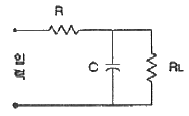
- R과 C를 크게 한다.
- R과 C를 작게 한다.
- R을 작게 한다.
- C를 작게 한다.
(정답률: 알수없음)
4. PN 접합 다이오드에 순방향전압을 인가하는 경우 전위장벽과 공간전하영역의 변화는?
- 전위장벽은 상승하고 공간전하영역은 좁아진다.
- 전위장벽은 저하하고 공간전하영역은 좁아진다.
- 전위장벽은 상승하고 공간전하영역은 넓어진다.
- 전위장벽은 저하하고 공간전하영역은 넓어진다.
(정답률: 알수없음)
5. 아래 회로에서 입력신호가 정현파인 경우 출력파형은?
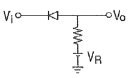
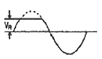
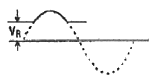
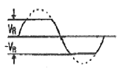
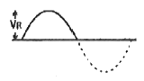
(정답률: 알수없음)
6. JFET의 채널은 어느 사이에 형성되는가?
- 게이트와 드레인의 사이
- 드레인과 소스의 사이
- 게이트와 소스의 사이
- 입력과 출력의 사이
(정답률: 알수없음)
7. 변조도 80[%]의 진폭변조에 있어서 반송파의 평균전력이 100[W]일 때 피변조파의 평균전력은 몇 [W]인가?
- 118
- 132
- 140
- 160
(정답률: 알수없음)
8. 그림과 같은 논리회로의 출력 Y를 나타낸 것으로 옳지 않은 것은?
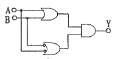
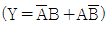
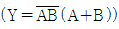
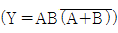
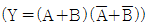
(정답률: 알수없음)
9. 다음 중 DSB에 대한 SSB의 설명으로 틀린 것은?
- 점유 주파수 대역폭이 반으로 된다.
- 전력소비가 적다.
- S/N 비가 향상된다.
- 선택성 페이딩의 영향이 크다.
(정답률: 알수없음)
10. 다음 중 그림과 같은 회로의 발진주파수는 약 몇 [kHz]인가?
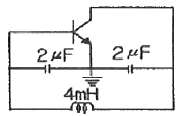
- 2.52
- 5.14
- 8.01
- 10.32
(정답률: 알수없음)
11. 180도 이내의 위상각에서만 컬렉터 전류가 흐르는 증폭기로 주로 무선 주파수를 증폭하는데 사용되는 증폭기는?
- A급 증폭기
- B급 증폭기
- C급 증폭기
- AB급 증폭기
(정답률: 알수없음)
12. 다음 중 포락선 검파기로 사용되는 소자로 알맞은 것은?
- LCD
- DIODE
- CRT
- PDP
(정답률: 알수없음)
13. 그림과 같이 증폭기를 3단 접속하여 첫 단의 증폭기 A1에 입력 전압으로 2[μN]인 전압을 가했을 때 종단 증폭기 A3의 출력 전압은 몇 [V]가 되는가? (단, 전압이득 G1, G2, G3는 각각 60dB, 20dB, 40dB 이다.)
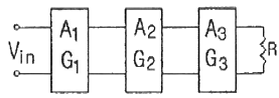
- 20
- 2
- 0.2
- 0.02
(정답률: 알수없음)
14. 접합형 FET의 동작원리에 관한 설명으로 옳은 것은?
- 전계에 의하여 전류의 흐름이 조절된다.
- 자계에 의하여 전류의 흐름이 조절된다.
- 전류가 흐르는 채널과 평형하게 전계를 가한다.
- 전류가 흐르는 채널과 평형하게 자계를 가한다.
(정답률: 알수없음)
15. 그림과 같은 연산회로의 명칭으로 옳은 것은?
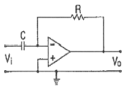
- 이상기
- 적분기
- 미분기
- 가산기
(정답률: 알수없음)
16. A, B, C 양의 논리입력에서 A＜B 이고 B＞C 일 경우에만 출력 Y가 "1"이 되는 논리식은?
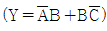
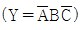
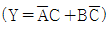
- Y=AC
(정답률: 알수없음)
17. 그림과 같은 RC 회로에서 ωRC＞＞1 인 경우 교류 전압을 인가하였을 때 출력전압 V2(t)는?
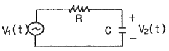
- 출력전압은 입력전압에 대한 미분형태로 나타난다.
- 출력전압은 입력전압에 대한 적분형태로 나타난다.
- 출력전압은 커패시터에 의해 충전되고, 전류는 흐르지 않는다.
- 출력전압은 입력전압과 동일하게 나타난다.
(정답률: 알수없음)
18. 다음 중 수정발진기의 특징이 아닌 것은?
- 수정진동자는 기계적으로나 물리적으로 안정하다.
- 선택도 Q가 매우 크다.
- 발진조건을 만족하는 유도성 주파수의 범위가 매우 넓다.
- 주위 온도의 영향이 적다.
(정답률: 알수없음)
19. 그림과 같은 형태의 회로는 무슨 용도인가?
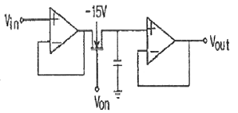
- 능동 피크 검출기
- SAMPLE AND HOLD
- 능동 리미터
- 대수 증폭기
(정답률: 알수없음)
20. 그림과 같은 연산증폭기에서 출력전압 V0는 몇 [V]인가? (단, R1=R2=2Ω, R3=R4=20Ω, V1=3V, V2=6V 이다.)
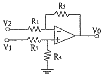
- 20
- 30
- -20
- -30
(정답률: 알수없음)
2과목: 회로이론 및 제어공학
21. R=5[Ω], L=20[mH] 및 가변 콘덴서 C로 구성된 R-L-C 직렬 회로에 주파수 1000[Hz]인 교류를 가한 다음 C를 가변시켜 직렬 공진시킬 때 C의 값은 약 몇 [㎌]인가?
- 1.27
- 2.54
- 3.52
- 4.99
(정답률: 알수없음)
22. 1[mV]의 입력 인가시 0.1[V]의 출력이 나오는 4단자 회로의 이득은 몇 [dB]인가?
- 10
- 20
- 30
- 40
(정답률: 알수없음)
23. 그림과 같은 회로의 2단자 임피던스 Z(S)는? (단, s=jω 이다.)
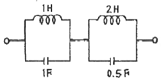
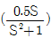
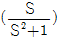
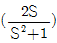
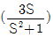
(정답률: 알수없음)
24. 분포 정수 회로에서 선로 정수가 R, L, C, G 이고 무왜 조건이 RC=GL 과 같은 관계가 성립될 때 선로의 특성 임피던스 Z0는?
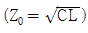
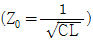
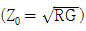
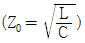
(정답률: 알수없음)
25. 불균형 3상 전류가 Ia=16+j2[A], Ib=-20-j9[A], Ic=-2+j10[A]일 때 영상분 전류 [A]는?
- -2+j
- -6+j3
- -9+j6
- -18+j9
(정답률: 알수없음)
26. i=40sinωt+30sin(3ωt+45°)의 실효값은 몇 [A]인가?
- 25
- 25√2
- 35√2
- 50
(정답률: 알수없음)
27.
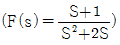
로 주어졌을 때 F(s)의 역변환을 한 것은?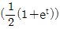
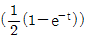
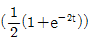
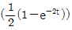
(정답률: 알수없음)
28. 다음의 3상 교류 대칭 전압 중에 포함되는 고조파에서 상순이 기본파와 같은 것은?
- 제3고조파
- 제5고조파
- 제7고조파
- 제9고조파
(정답률: 알수없음)
29. 회로에서 정전용량 C는 초기전하가 없었다. 지금 t=0에서 스위치 K를 닫았을 때 t=0+ 에서의 i(t) 값은?
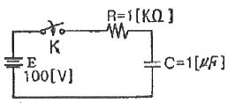
- 0.1[A]
- 0.2[A]
- 0.4[A]
- 1[A]
(정답률: 알수없음)
30. 그림에서 단자 a, b에 나타나는 전압은 얼마인가?
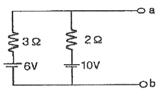
- 6
- 8.4
- 10
- 16
(정답률: 알수없음)
31. 루우스 안정판별표에서 수열의 최좌열이 다음과 같을 때 이 계통의 특성 방정식에는 양의 근 또는 양의 실수부를 갖는 근이 몇 개 있는가?
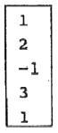
- 전혀 없다.
- 1개 있다.
- 2개 있다.
- 3개 있다.
(정답률: 알수없음)
32. ω가 0에서 ∞까지 변화하였을 때 G(jω)의 크기와 위상각을 극좌표에 그린 것으로 이 궤적을 표시하는 선도는?
- 근궤적도
- 나이쿼스트선도
- 니콜스선도
- 보드선도
(정답률: 알수없음)
33. 다음 설명 중 옳지 않은 것은?
- S평면의 우측면은 Z평면의 원점에 중심을 둔 단위원내부로 사상된다.
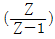
에 대응되는 라플라스 변환함수는 1/S 이다.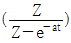
에 대응되는 시간함수 e-at 이다.- e(t)의 초기값은 e(t)의 Z변환을 E(Z)라 할 때
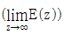
이다.
(정답률: 알수없음)
34. 그림은 무엇을 나타낸 논리 연산 회로인가?
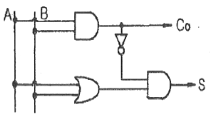
- NAND 회로
- Exclusive OR 회로
- Half-adder 회로
- Full-adder 회로
(정답률: 알수없음)
35. 그림과 같은 회로망은 어떤 보상기로 사용될 수 있는가?
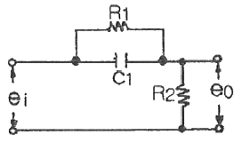
- 지연 보상기
- 지·진상 보상기
- 지상 보상기
- 진상 보상기
(정답률: 알수없음)
36. 다음과 같은 특성방정식이 있을 때 근궤적의 가지수는?
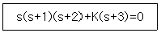
- 6
- 5
- 4
- 3
(정답률: 알수없음)
37. 2차계의 주파수 응답과 시간 응답간의 관계이다. 잘못된 것은?
- 안정된 제어계에서 높은 대역폭은 큰 공진 첨두치와 대응된다.
- 최대 오버슈트와 공진첨두치는 ζ(감쇠율)안의 함수로 나타낼 수 있다.
- ωn가 일정시 ζ가 증가하면 상승시간과 대역폭은 증가한다.
- 대역폭은 0 주파수 이득보다 3[dB] 떨어지는 주파수로 정의된다.
(정답률: 알수없음)
38. Z 변환법을 사용한 샘플치 제어계가 안정되려면 1+GH(Z)=0 의 근의 위치는?
- Z 평면의 좌반면에 존재하여야 한다.
- Z 평면의 우반면에 존재하여야 한다.
- ㅣZㅣ=1인 단위 원내에 존재하여야 한다.
- ㅣZㅣ=1인 단위 원밖에 존재하여야 한다.
(정답률: 알수없음)
39.
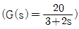
인 요소에서 ω=2인 정현파를 주었을 때 ㅣG(jω)ㅣ 와 ∠G(jω)를 구하면?- 4, 53°
- 4, -53°
- -4, 53°
- -4, -53°
(정답률: 알수없음)
40. 다음 그림 중 ①에 알맞은 신호는?
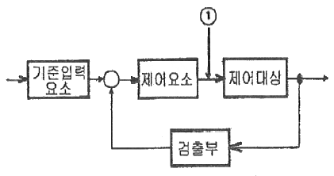
- 기준입력
- 동작신호
- 조작량
- 제어량
(정답률: 알수없음)
3과목: 신호기기
41. 다음 중 SCR의 설명으로 옳은 것은?
- PNPN 구조를 갖는 4층 반도체 소자
- 스위칭 기능을 갖는 쌍방향성의 3단자 소자
- 제어 기능을 갖는 쌍방향성의 3단자 소자
- 증폭 기능을 갖는 단일 방향성의 3단자 소자
(정답률: 알수없음)
42. 단상 50[kVA], 1차 3300[V], 2차 220[V], 60[Hz] 변압기가 있다. 1차 권수 600회, 철심의 유효 단면적 160[cm2]의 변압기 철심의 자속밀도 [wb/m2]는 약 얼마인가?
- 1.3
- 1.7
- 2.3
- 2.7
(정답률: 알수없음)
43. 계전기실, 열차집중제어장치 기계실, 신호원격제어장치 및 건널목의 AC 전원에 대한 접지저항은 몇 [Ω] 이하로 하는가?
- 10
- 20
- 30
- 100
(정답률: 알수없음)
44. NS형 전기선로전환기에서 설명이 잘못된 것은?
- 전환종료시 역회전이 생기지 않아야 한다.
- 동작 시분은 6초 이하이어야 한다.
- 수동핸들부의 핸들부 기능은 투입하였을 때에는 완전하게 접속되고 개방하였을 때는 진동 등으로 접속되지 않아야 한다.
- 마찰클러치는 봄, 가을 년 2회 조정한다.
(정답률: 알수없음)
45. 열차의 유무를 검지하고 연속정보를 차상으로 전송하기 위해 레일을 이용하여 구성한 전기적인 회로를 말하는 것은?
- 궤도회로
- 건널목 제어기
- 궤도 접촉기
- SR
(정답률: 알수없음)
46. 단상 유도 전압 조정기에서 단락 권선의 직접적인 역할은?
- 고조파 방지
- 용량 증대
- 역률 보상
- 누설리액턴스로 인한 전압강하 방지
(정답률: 알수없음)
47. 권선형 유도 전동기의 기동시 2차측에 저항을 넣는 이유는?
- 회전수 감소
- 기동 전류 감소와 토크 증대
- 기동 토크 감소
- 기동 전류 증가
(정답률: 알수없음)
48. 교류전기 선로전환기의 전동기 회전방향을 제어하는 기기는?
- 전철정자
- 제어계전기
- 회로제어기
- 계자권선접속기
(정답률: 알수없음)
49. 단상 변압기를 병렬 운전하는 경우 부하 전류의 분당과 관계되는 것은?
- 누설 임피던스에 비례한다.
- 누설 리액던스에 비례한다.
- 누설 임피던스에 반비례한다.
- 누설 리액던스에 반비례한다.
(정답률: 알수없음)
50. 전부하에서 동손이 80[W], 철손이 40[W]인 변압기가 최대 효율을 나타내는 부하 [%]는?
- 50
- 60
- 70
- 80
(정답률: 알수없음)
51. 직류기에 보극을 설치하는 목적이 아닌 것은?
- 정류자의 불꽃 방지
- 브러시의 이동 방지
- 정류 기전력의 발생
- 난조의 방지
(정답률: 알수없음)
52. 출력 3[kW], 1500[rpm]으로 회전하는 전동기의 토크는 약 몇 [kg·m]인가?
- 25.5
- 27.9
- 1.95
- 1.47
(정답률: 알수없음)
53. 다음 계전기 기호의 명칭은?
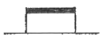
- 거치형 완동계전기
- 거치형 완방계전기
- 삽입형 자기유지 계전기
- 삽입형 완방계전기
(정답률: 알수없음)
54. 변압기 내부의 저항과 누설 리액턴스의 [%] 강하는 3[%], 4[%]이다 부하의 역률이 지상 60[%]일 때 이 변압기의 전압 변동률[%]은?
- 4.8
- 4
- 5
- 1.4
(정답률: 알수없음)
55. 접정수가 NR2/NR2이고 정격전류가 125[mA], 선륜 저항이 4[Ω], 사용전압이 0.5[V]인 계전기는?
- 직류 단속계전기
- 직류 궤도 연동계전기
- 직류 유극 선조계전기
- 직류 무극 궤도계전기
(정답률: 알수없음)
56. 200[V]인 3상 유도전동기의 전부하 슬립이 4[%]이다. 공급전압이 180[V]가 되면 전부하 슬립[%]은?
- 3
- 4
- 5
- 6
(정답률: 알수없음)
57. 건널목 경보기에서 경보기와 제어유니트의 절연저항은 전기회로와 대지간 최소 몇 [MΩ] 이상이어야 하는가?
- 1
- 2
- 3
- 4
(정답률: 알수없음)
58. 건널목 경보기에서 경보등의 점멸회수는 등당 몇 [회/min]인가?
- 20±5
- 30±5
- 40±10
- 50±10
(정답률: 알수없음)
59. 여자전류가 흐르고서부터 N접점이 구성(접촉)될 때까지 다소간 시소를 갖는 계전기는?
- 궤도계전기
- 완동계전기
- 시소계전기
- 완방계전기
(정답률: 알수없음)
60. 무부하시 자여자가 되지 않는 직류기는?
- 타여자기
- 분권기
- 복권기
- 직권기
(정답률: 알수없음)
4과목: 신호공학
61. 다음 중 서행허용표지를 설치하는 신호기는?
- 중계신호기
- 유도신호기
- 서행신호기
- 자동폐색신호기
(정답률: 알수없음)
62. 복궤조 궤도회로에서 좌우 2본의 각 레일의 전류값이 각각 600A, 500A가 흐른다면 불균형의 정도는 약 몇 %인가?
- 6
- 7
- 8
- 9
(정답률: 알수없음)
63. 현재 운영되고 있는 경부고속철도의 열차제어시스템이 아닌 것은?
- 열차집중제어장치(CTC)
- 전자연동장치(IXL)
- 지능형 열차제어시스템(MBS)
- 열차자동제어장치(ATC)
(정답률: 알수없음)
64. 그림에서 장내신호기 1A에 의해 5T에 열차를 도착시킬 때 전기연동장치의 동작 또는 확인에 대한 설명 ①, ② 다음에 오는 동작 또는 확인사항으로 다음 중 그 순서가 가장 빠른 것은?
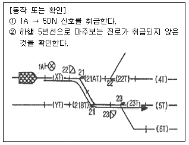
- 선로전환기 21호를 반위, 23호를 정위로 전환한다.
- 하행 5번선으로 진로가 개통된 것을 확인한다.
- 선로전환기 21, 23호를 쇄점한다.
- 1A에 진행을 지시하는 신호를 현시한다.
(정답률: 알수없음)
65. 폐색구간의 시점에 폐색신호기를 설치하지 않는 경우는 그 시점에 어떤 신호기를 설치하는 경우인가?
- 장내신호기 또는 출발신호기
- 장내신호기 또는 유도신호기
- 유도신호기 또는 원방신호기
- 출발신호기 또는 원방신호기
(정답률: 알수없음)
66. 시간쇄정설비에 대한 설명으로 가장 거리가 먼 것은?
- 갑과 을의 취급버튼 상호간에 쇄정하는 갑의 취급버튼을 정위로 복귀하여도 을의 취급버튼은 일정시간이 경과할 때까지 해정되지 않는 것을 말한다.
- 진로내의 선로전환기로 진로쇄정을 설비할 수 없는 선로전환기에 설비한다.
- 진로내의 선로전환기가 열차 도착전 해정될 수 있는 선로전환기에 설비한다.
- 과주여유 거리 밖의 선로전환기에 설비한다.
(정답률: 알수없음)
67. 계전연등장치의 신호제어회로 결선도를 작성할 때 필요한 조건으로 틀린 것은?
- 도착전 계전기의 여자 접점
- 진로조사계전기의 여자 접점
- 진로쇄정계전기의 낙하 접점
- 전철쇄정계전기의 여자 접점
(정답률: 알수없음)
68. 유도신호기로서 정지, 주의, 진행신호를 나타내는 다등형 신호기의 도식기호는?
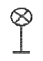
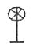
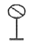
(정답률: 알수없음)
69. 단선구간 상·하 장내신호기에 진행신호를 동시에 현시할 수 없도록 하는 쇄정은?
- 편쇄정
- 정위쇄정
- 정·반위쇄정
- 반위쇄정
(정답률: 알수없음)
70. 건널목 지장물검지장치의 설명으로 옳은 것은?
- 발광기와 수광기간의 거리는 50m 이하로 한다.
- 발광기의 빔 확산 각도는 5° 이하로 한다.
- 건널목 경계지점 외방 400m 위치에서 지장 경고등의 확인이 가능하여야 한다.
- 수광기는 일출시에 10° 이내에 직사광선이 들어가지 않도록 한다.
(정답률: 알수없음)
71. 어느 구간의 궤도회로에 4V, 1A의 전원을 공급하였을 때 수전 전압의 측정치가 3.95V이면 이 궤도회로의 저항은 몇 Ω인가?
- 0.01
- 0.03
- 0.⑤
- 0.08
(정답률: 알수없음)
72. 운전시격의 단축방안으로 볼 수 없는 것은?
- 도착선을 상호 사용할 수 있도록 신호설비 설치
- 선로전환기 상호 쇄정
- 구내 폐색신호기 건식
- 가속도와 감속도가 큰 고성능 동력차 사용
(정답률: 알수없음)
73. 직류 궤도계전기의 단자전압 조정 범위에 대한 설명으로 옳은 것은?
- 송전단 레일에서 측정하여 항상 정격값 유지
- 착전단 레일에서 측정하여 항상 정격값 유지
- 계전기 단자에서 정격의 0.8∼0.9배가 되도록 조정
- 맑은 날 정격값의 1.1∼1.3배가 되도록 조정
(정답률: 알수없음)
74. 우리나라 비전철 구간의 5현시 구간에 사용하고 있는 ATS 장치는 일반적으로 어떤 방식으로 하고 있는가?
- 단변주방식
- 다변주방식
- 복합변주방식
- 혼합변주방식
(정답률: 알수없음)
75. 철도신호는 기관사에게 열차의 운전조건을 제시하는 설비로서 열차의 진행 가부를 색이나 형 또는 음으로 표시하는 것이다. 다음 중 “형과 색”의 2가지를 제시하는 철도신호는 어느 것인가?
- 발뢰신호
- 선로전환기 표지
- 차막이 표지
- 진로표시기
(정답률: 알수없음)
76. 자동진로제어장치(PRC)의 진로 제어 구조로 볼 수 없는 것은?
- 열차 추적
- DIA 관리
- 고장구간 판정
- 진로 제어
(정답률: 알수없음)
77. 경부고속철도의 루프 케이블을 통한 불연속 정보전송의 사항이 아닌 것은?
- 전차선 사구간 정보
- 터널 진·출입 정보
- 폐색구간내 구배 정보
- 절대정지 제어 정보
(정답률: 알수없음)
78. CTC 장치의 구성 및 기능에 대한 설명으로 틀린 것은?
- 피제어역의 연동장치는 전기 또는 전자연동장치를 설치한다.
- 역간 폐색방식은 자동폐색장치를 설치한다.
- 단선구간의 대향으로 되는 출발신호기 상호간의 연쇄는 반위쇄정이다.
- CTC 장치에 사용하는 컴퓨터장치는 Hot Stand-By로 한다.
(정답률: 알수없음)
79. 궤도회로에 대한 다음 설명 중 옳은 것은?
- 인접 궤도회로와 이극으로 구성하고 레일절연이 파손된 경우 궤도계전기가 낙하되어 안전축으로 동작하여야 한다.
- 인접궤도회로와 통극으로 구성하고 인접 궤도회로와의 사이에 궤조절연을 단락했을 때 궤도계전기가 낙하되어 안전축으로 동작하여야 한다.
- AF 궤도회로는 인접하는 궤도회로 상호간에는 사용하는 주파수가 같게 설비한다.
- AF 궤도회로는 병행하는 궤도회로 상호간에는 사용하는 주파수가 같게 설비한다.
(정답률: 알수없음)
80. 신호장치의 안전측 동작원리로 틀린 것은?
- 궤도회로는 폐전로식
- 계전기 회로는 무여자시 기기를 해정하는 방식
- 전원과 계전기의 위치를 양단으로 하는 방식
- 양선으로 계전기를 제어하는 방식
(정답률: 알수없음)